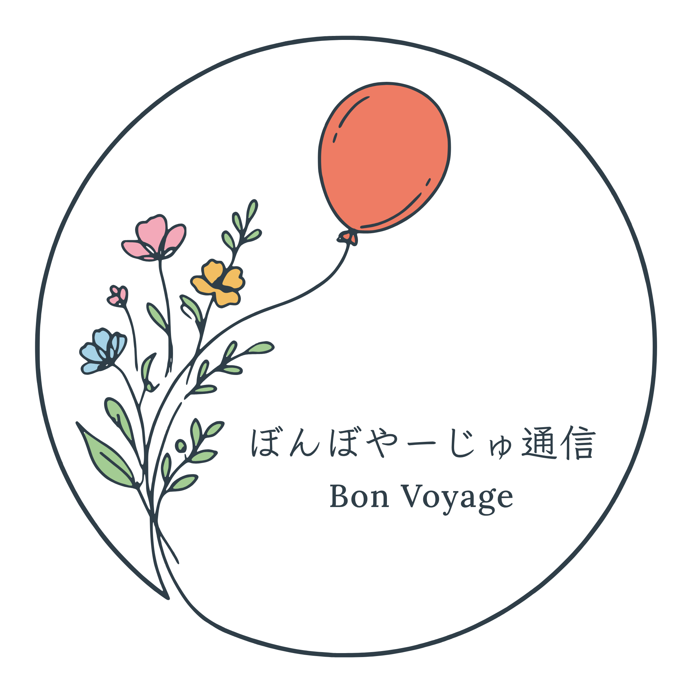

WEEKLY LETTER FOR FAMILIES IN KODAIRA
小平の、子育て中のご家庭へ

ぼんぼやーじゅ通信
Bon Voyage
週末のおでかけを、水曜の朝に
赤ちゃん・未就学児・小学生のいるご家庭へ。となりの市も含めた週末のおでかけ情報を、毎週水曜の朝、LINEで無料でお届けしています。
年齢別に
赤ちゃん連れ・未就学の子・
小学生のページに分けて
公式で確かめて
市や施設の公式ページで、
一件ずつ確かめています
公園から講座まで
公園・児童館・図書館・
科学館。季節のお祭りや講座も
NEW
11月25日の号から、子連れで入りやすいカフェも
キッズスペース・座敷・おむつ替えなど、お店の案内に書いてあることを載せます
LINEで友だち登録すると
風船をどうぞ 🎈
登録済みの方も、LINEの画面を見せてください

LINE
カメラで読むと、
友だち追加の画面が
開きます 無料です。お名前やご住所の入力はいりません。合わなければ、いつでも解除できます。
カメラで読むと、
友だち追加の画面が
開きます 無料です。お名前やご住所の入力はいりません。合わなければ、いつでも解除できます。
今週号をのぞく登録しなくても、
ホームページで読めます
ホームページで読めます
 登録している方へご意見をお聞かせください
登録している方へご意見をお聞かせください（匿名・3分ほど）
発行：ぼんぼやーじゅ通信の会（小平市・花小金井）／小平市民活動支援センター あすぴあ 登録団体（第254号）／書いているのは、花小金井に住む子育て中の親です